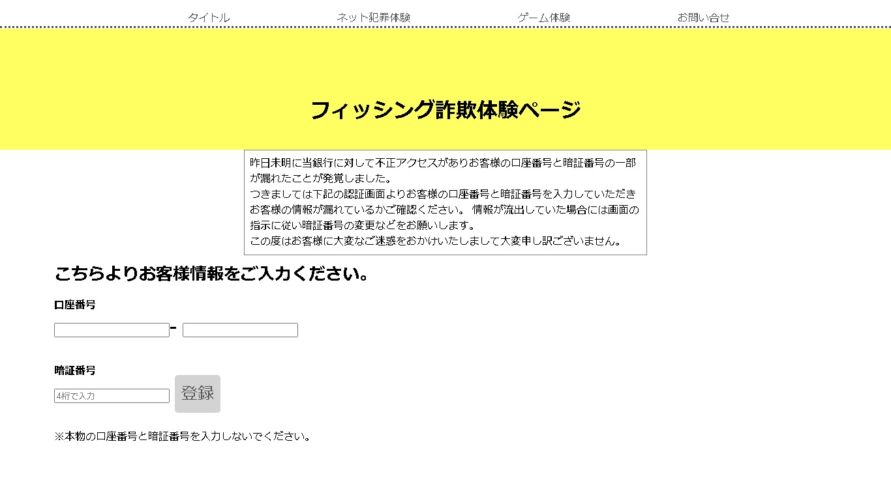
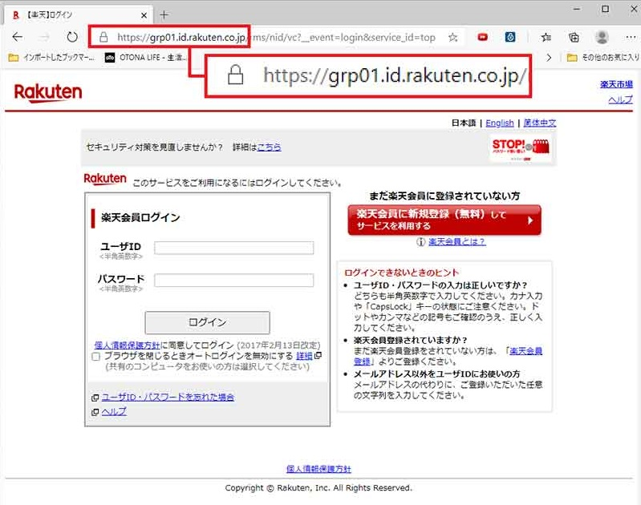
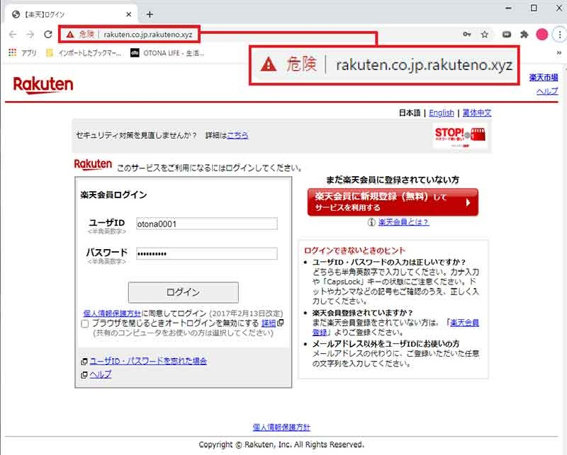

フィッシング詐欺解説ページ
フィッシング詐欺 解説

| フィッシングとは |
|---|
フィッシングは偽物の銀行やSNSのサイトに誘導して口座情報やアカウント情報を盗むネット犯罪です。
上記のフィッシングではpro10銀行という架空の銀行が不正アクセスによって個人情報の流出があったため流出していないかの確認を求めています。
フィッシング対策協議会によれば、2013年の偽のウェブサイトへ誘導する電子メールや偽のウェブサイトを発見したという報告が過去最多になりました。 特に高齢者を中心に被害に遭うケースが頻発しているとのことです。 偽のウェブサイトの完成度はとても高く、本物と遜色ないものになっています。
URL以外は違いがありません。
そのため、これに対する有効な手段は個人情報を入力するよう書かれたメールが届いた時にはメールに記載されているアドレスをクリックせず、自分で検索をしてそのサイトにアクセスすることです。
フィッシングの手口は年々巧妙になっています。
一見では見分けがつかないので以下のことに注意をしましょう。
銀行が電話やメールで暗証番号などを確認することはありません。また、個人情報の流出などがあった場合には銀行のホームページでお知らせが掲載され、そこで対応が掲載されるのでメールからサイトに飛ぶのではなく、自分で検索をして銀行のホームページにアクセスするか事前にお気に入り登録を行い、そこからアクセスするようにしましょう。
フィッシングサイトではセキュリティソフトで検知されます。常にセキュリティソフトは最新にしましょう。
銀行口座についてやアカウント情報に関するメールで不安になることがあれば、それを運営する会社の受付窓口に連絡をしましょう。そうすることでそのメールが本物か偽物か把握ができます。
上記のフィッシングではpro10銀行という架空の銀行が不正アクセスによって個人情報の流出があったため流出していないかの確認を求めています。
フィッシング対策協議会によれば、2013年の偽のウェブサイトへ誘導する電子メールや偽のウェブサイトを発見したという報告が過去最多になりました。 特に高齢者を中心に被害に遭うケースが頻発しているとのことです。 偽のウェブサイトの完成度はとても高く、本物と遜色ないものになっています。
rakutenでのフィッシング詐欺サイト例
こちらが本物↓
こちらが偽物↓
URL以外は違いがありません。
そのため、これに対する有効な手段は個人情報を入力するよう書かれたメールが届いた時にはメールに記載されているアドレスをクリックせず、自分で検索をしてそのサイトにアクセスすることです。
| 対策方法 |
|---|
一見では見分けがつかないので以下のことに注意をしましょう。
| １.銀行が電話やメールで暗証番号を確認することはない |
|---|
| ２.セキュリティソフトは常に最新にする |
|---|
| ３.不安になったらサイトの受付窓口に相談する |
|---|